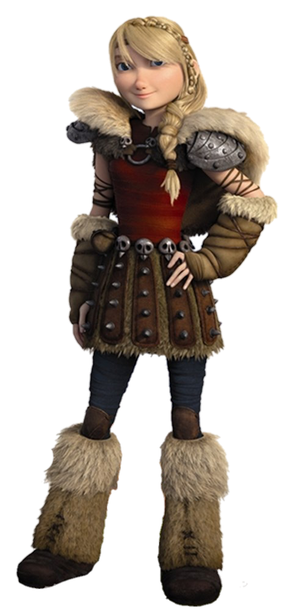
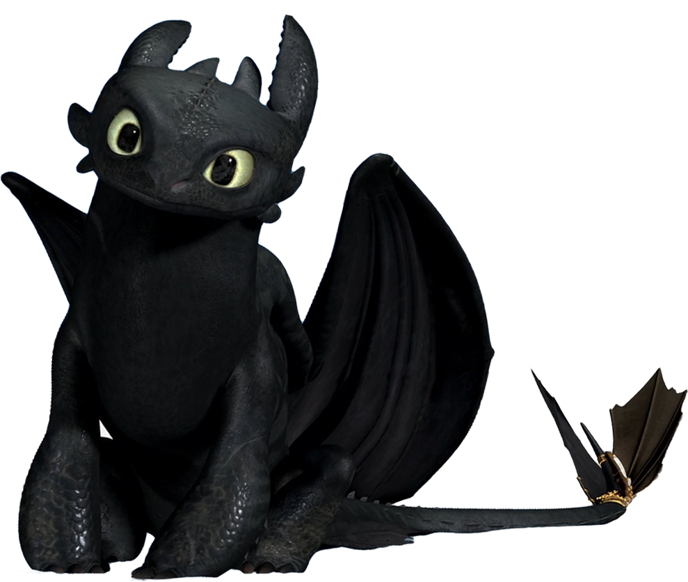
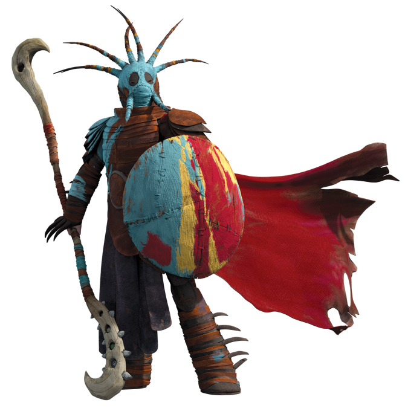
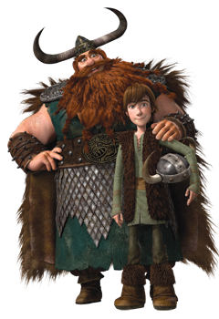
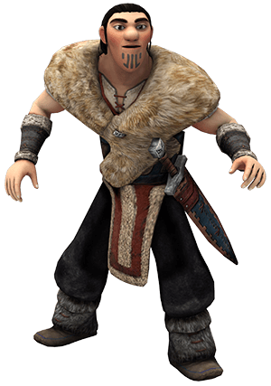

| Hipo Horrendo Abadejo III es el personaje principal de la película de DreamWorks del 2010, Cómo Entrenar a tu Dragón.Es miembro de la tribu de los Gamberros Peludos. Su dragón, Chimuelo, es un Furia Nocturna, el más raro y más inteligente de las especies de dragón en la película. |  | Astrid Hofferson es una joven chica vikinga de la tribu de los Gamberros Peludos que asiste al entrenamiento con Hipo y los otros vikingos adolescentes. |
 | Chimuelo es el dragón de Hipo en las películas. Él es un poderoso Furia Nocturna. | ||
 | Valka es la esposa de Estoico y la madre de Hipo. Es la deuteragonista (co-protagonista) de la secuela | ||
 | Estoico el Vasto fue el padre de Hipo y el jefe de mal genio de la tribu de los Gamberros Peludos. Tiene un casco con cuernos grandes y es el mejor amigo de Bocón el Rudo.

Eret, también conocido como Eret, Hijo de Eret,
es un atrapador de dragones que le vende los dragones que atrapa a Drago Manodura.
Él es uno de los antagonistas que despues une fuerzas con los protagonistas de Cómo Entrenar a tu Dragón 2. |